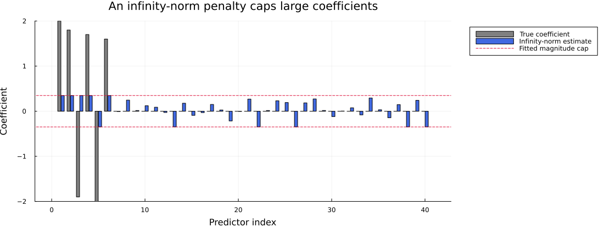

Least squares with an ℓ∞ penalty
Sparsity is not always the goal. When a regression should avoid a few very large coefficients, an infinity-norm penalty can limit the largest magnitude while spreading the fit across predictors. Unlike lasso, it need not remove predictors. The figure shows the resulting shared cap on a seeded regression and compares its coefficients with the generating values.

Least squares with an ℓ∞ penalty, with proximal gradient descent and accelerated proximal gradient descent:
$\min_b \; \frac{1}{2n}\|y - Xb\|^2 + \lambda \|b\|_\infty, \qquad \|b\|_\infty = \max_j |b_j|.$
NormLinf(λ) is accepted by ProximalGradientDescent and AccProxGradDescent. CDSolver refuses it: this CDSolver needs a separable penalty for its coordinate oracle, and NormLinf is not separable. Where NormL1 penalizes the sum of the magnitudes of the coefficients and tends to give zeros, NormLinf penalizes the largest magnitude. Its proximal operator clips the entries at a common level, which can tie several of the largest coefficients at the maximum (as in the problems below, not for every problem), and it does not in general give zeros.
A proposed stop is verified by the solvers' generic proximal-gradient check, which uses only the proximal operator. Accuracy below is checked with the objective and a duality gap computed from X and y, not with the converged flags.
using LinearAlgebra, Random, ProximalBase, ProximalSolversPart A: an analytic case
For X = [1 1], y = [2] and λ = 1 the objective is $(2 - b_1 - b_2)^2/2 + \max(|b_1|, |b_2|)$. At the minimizer b_1 = b_2 = s (spreading a fixed sum over two coefficients lowers the maximum), and (2 - 2s)^2/2 + s is minimized at s = 3/4: β* = (0.75, 0.75) with P* = 0.875. The lasso objective with the same data, $(2 - b_1 - b_2)^2/2 + |b_1| + |b_2|$, depends on the sum only for b ≥ 0, so every b ≥ 0 with b_1 + b_2 = 1 minimizes it: the ℓ1 penalty does not prefer the balanced point.
X1, y1 = [1.0 1.0], [2.0]
f1, g1 = LeastSquaresLoss(y1, X1), NormLinf(1.0)
options1 = ProximalOptions(maxiter = 10_000, ftol = 1e-15, xtol = 1e-14, gradtol = 1e-12, allow_f_increases = true)
for method in (ProximalGradientDescent(), AccProxGradDescent()), start in ([0.0, 0.0], [3.0, -2.0])
b = copy(start)
r = solve!(b, f1, g1, method, options1)
@assert r.converged && r.minimizer === b
@assert maximum(abs, b - [0.75, 0.75]) <= 1e-9
@assert abs(r.minimum - 0.875) <= 1e-12
endPart B: a seeded correlated problem
n = 200 observations and p = 40 predictors with correlation 0.7^|i-j| between predictors i and j (an AR(1) design), a known coefficient vector with six large coefficients of similar size, and Gaussian noise.
rng = Xoshiro(2026)
n, p = 200, 40
X = randn(rng, n, p)
for j in 2:p # neighbouring columns with correlation 0.7
X[:, j] .= 0.7 .* X[:, j - 1] .+ sqrt(1 - 0.7^2) .* X[:, j]
end
beta_true = zeros(p)
beta_true[1:6] .= [2.0, 1.8, -1.9, 1.7, -2.0, 1.6]
y = X * beta_true .+ 0.5 .* randn(rng, n)
f = (1 / n) * LeastSquaresLoss(y, X)ProximalBase.Scaled{ProximalBase.LeastSquaresLoss{Float64, Vector{Float64}, Matrix{Float64}, 1, Vector{Float64}}, Float64}(ProximalBase.LeastSquaresLoss{Float64, Vector{Float64}, Matrix{Float64}, 1, Vector{Float64}}([-3.4457651839108143, 1.7680051954107183, -0.4445476762436948, -0.1431029423605572, 0.551324604486303, -0.0720497683141933, 0.7280585046641197, 4.236830631328215, 1.40291903335279, -2.5787444810433486 … 4.563971127810702, -6.4824856533655915, 1.5230410475206668, -2.731424375749944, -0.4410156354975369, -2.900708988739678, -1.620849394763046, -0.9557879375120898, 0.7171925830997904, 0.4316947970480003], [-0.9181301246372607 -0.8836902422672976 … -0.6971948752944908 -2.2249902034456945; 0.31359332462451994 -0.23043892623013013 … -0.3610307116162793 -0.5077065081245811; … ; 0.8893636937242475 1.6142578435313415 … 0.5072571742474188 1.0388470560761371; -0.27082986398412107 1.323719891644922 … 0.26752912151826086 1.2928235046317422], [0.0, 0.0, 0.0, 0.0, 0.0, 0.0, 0.0, 0.0, 0.0, 0.0 … 0.0, 0.0, 0.0, 0.0, 0.0, 0.0, 0.0, 0.0, 0.0, 0.0], Matrix{Float64}(undef, 0, 0), Float64[], Float64[], Float64[], ProximalBase.Scratch(nothing), false), 0.005)The level is a fraction of $\lambda_{crit} = \|\nabla f(0)\|_1 = \|X^T y\|_1 / n$, above which the solution is 0. (The lasso threshold is the smaller $\|\nabla f(0)\|_\infty$, which does not apply.)
lambda_crit = norm(X' * y, 1) / n
lambda = 0.3 * lambda_crit
g = NormLinf(lambda)NormLinf(5.000750322208684)Independent objective and duality checks
The objective from the data, and a duality gap. For u = (Xb - y)/n scaled by min(1, λ/‖Xᵀu‖₁), the dual objective is $-y^T u - n\|u\|^2/2$, which is at most the optimal value; the gap is the primal value minus it, and it is nonnegative.
objective(b) = sum(abs2, y - X * b) / (2n) + lambda * maximum(abs, b)
function duality_gap(b)
u = (X * b - y) / n
u *= min(1, lambda / norm(X' * u, 1))
objective(b) - (-dot(y, u) - n * dot(u, u) / 2)
end
options = ProximalOptions(maxiter = 20_000, ftol = 1e-14, xtol = 1e-12, gradtol = 1e-9, allow_f_increases = true)
results = Pair{String, Any}[]
betas = Vector{Float64}[]
for (name, method) in (("ProximalGradientDescent", ProximalGradientDescent()), ("AccProxGradDescent", AccProxGradDescent()))
b = zeros(p)
r = solve!(b, f, g, method, options)
push!(results, name => r)
push!(betas, b)
@assert r.converged && r.minimizer === b
@assert isapprox(r.minimum, objective(b); rtol = 1e-10) # the reported objective is the one from the data
@assert duality_gap(b) >= -1e-12 # weak duality
@assert duality_gap(b) <= 1e-8 * objective(b) # an independent optimality certificate
end
@assert maximum(abs, betas[1] - betas[2]) <= 1e-3 # both reach the same point, up to the gap's accuracyReading the common-cap figure
The dashed lines mark $\pm\|\widehat\beta\|_\infty$ for the accelerated solution. Several large coefficients reach this common magnitude, whereas the smaller coefficients remain nonzero. The cap can reduce a large effect, but it does not select a short model. Our zero-intercept simulation uses comparable predictor scales; rescaling a predictor would change this penalty's meaning.
using Plots
primary_figure = bar(hcat((1:p) .- 0.18, (1:p) .+ 0.18), hcat(beta_true, betas[2]);
bar_width=0.34,
label=["True coefficient" "Infinity-norm estimate"], color=[:gray :royalblue],
xlabel="Predictor index", ylabel="Coefficient", title="An infinity-norm penalty caps large coefficients",
legend=:outertopright, size=(1100, 430))
coefficient_cap = maximum(abs, betas[2])
hline!(primary_figure, [coefficient_cap, -coefficient_cap]; color=:crimson,
linestyle=:dash, label=["Fitted magnitude cap" ""])
savefig(primary_figure, "linf_regularized_regression.svg")
nothingIn this problem the ℓ∞ solution has no zero coefficient, and several of its largest coefficients are tied at the maximum.
for ((name, r), b) in zip(results, betas)
top = maximum(abs, b)
at_max = count(c -> abs(c) >= (1 - 1e-6) * top, b)
@assert at_max >= 2 && count(iszero, b) == 0
println(rpad(name, 24), " objective = ", round(r.minimum; digits = 8), ", iterations = ", r.iterations,
", f/grad/prox calls = ", r.f_calls, "/", r.grad_calls, "/", r.prox_calls,
", max|b| = ", round(top; digits = 6), ", coefficients at the maximum = ", at_max,
", zeros = ", count(iszero, b), ", duality gap = ", duality_gap(b))
end
println("lambda = ", round(lambda; digits = 6), ", lambda_crit = ", round(lambda_crit; digits = 6),
"; max|b_true| = ", maximum(abs, beta_true))ProximalGradientDescent objective = 5.1507166, iterations = 287, f/grad/prox calls = 619/291/403, max|b| = 0.348307, coefficients at the maximum = 11, zeros = 0, duality gap = 1.2769012514013411e-8
AccProxGradDescent objective = 5.1507166, iterations = 114, f/grad/prox calls = 258/138/157, max|b| = 0.348307, coefficients at the maximum = 11, zeros = 0, duality gap = 1.242662683864637e-8
lambda = 5.00075, lambda_crit = 16.669168; max|b_true| = 2.0Limitations
This penalty controls the largest coefficient rather than the number of selected variables. It can therefore retain many noise predictors and bias large true effects toward a common magnitude. Results depend on predictor scaling and the penalty level; the fixed level here is illustrative. A numerical duality gap assesses the computed optimum, not generalization or scientific relevance.
What we learned
Different coefficient norms express different modeling priorities. The infinity norm can produce tied coefficient magnitudes without sparse selection. Its independent dual certificate matches that objective rather than using the lasso's coordinatewise threshold conditions.